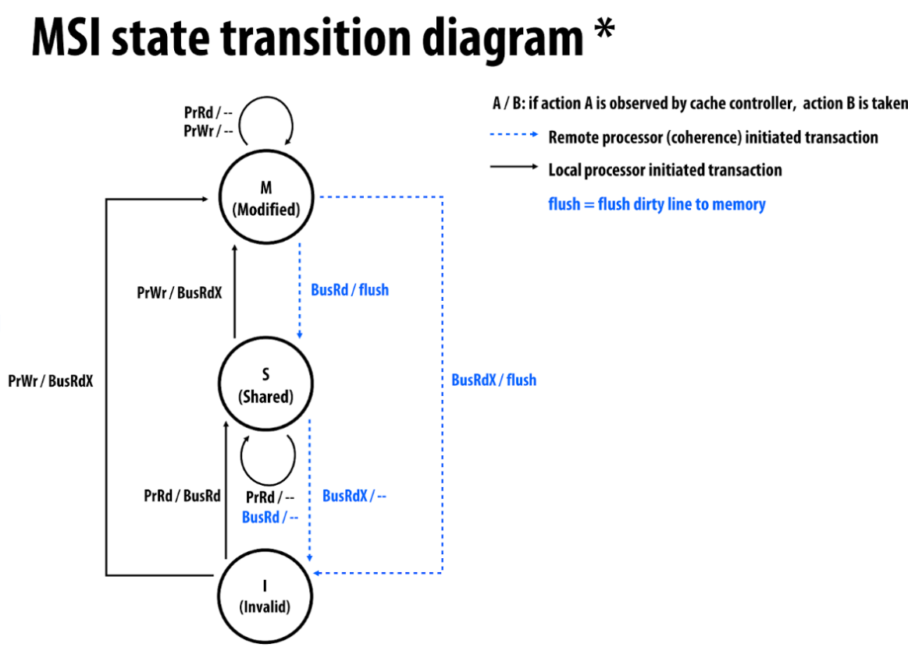
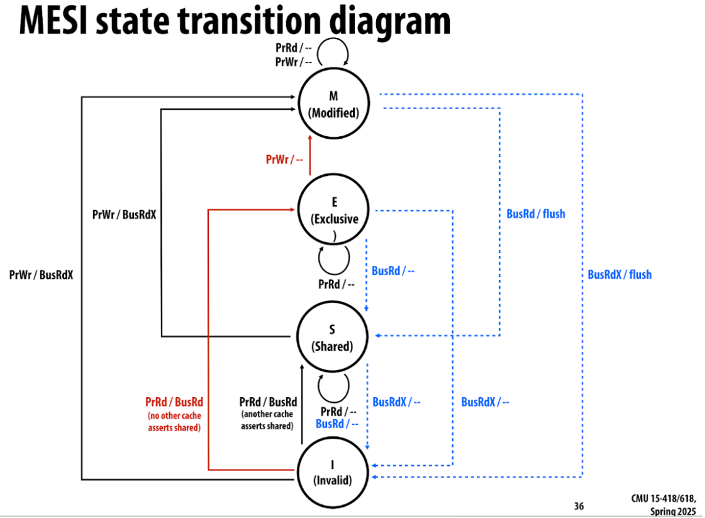

Our project is to build a shared address space multiprocessor cache simulator, and to implement and measure the performances of different snooping-based cache-coherence protocols.
https://mshort2.github.io/15418project/
We covered snooping-based cache coherence protocols in class, including MSI, MESI, MOESI, and MESIF.
 
We plan to test using a write cache in addition to these protocols, where multiple writes to the same block are cached and coalesced into a single write transaction instead of being sent separately. This will be implemented on top of an existing protocol.
Maintaining cache coherence across transactions is a primary challenge. Write caching introduces an added complexity, requiring adherence to release consistency. Implementing the coherence protocols correctly in our simulator is nontrivial due to the complexity of message passing and state transitions.
We also need to establish a communication system between “processors” and ensure proper message transmission. Additionally, designing tests and performance metrics for our simulator is essential. We plan to use Professor Railing’s Computer Architecture Design Simulator for Students (CADSS) framework.
We are using the CADSS framework created by Professor Railing for the cache simulator and testing, as suggested by Professor Mowry. We are also referring to research papers like this one by Fredrik Dahlgren for adding write caches to snooping protocols. We are still deciding on trace generation software for memory traces.
We will use the Gates machines. Since our project is a simulator, it does not require complex hardware, but we need a multiprocessor machine to simulate a multiprocessor cache.
April 7th: Implement MSI
April 10th: Implement MESI and MESIF
April 14th: Implement MOESI and collect initial data
April 15th: Compile our Milestone report
April 20th: Implement write caching mechanism
April 23rd: Generate exhaustive traces
April 26th: Create reports for performance benchmarks
April 28th: Submit final report and finalize poster